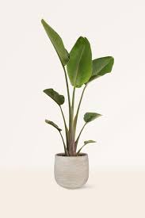
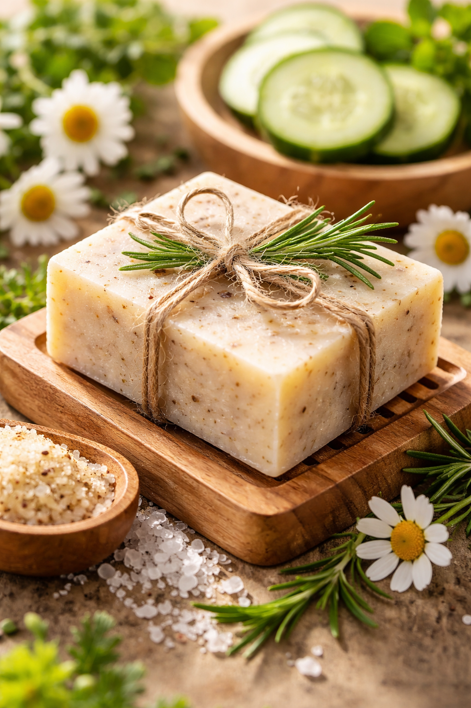
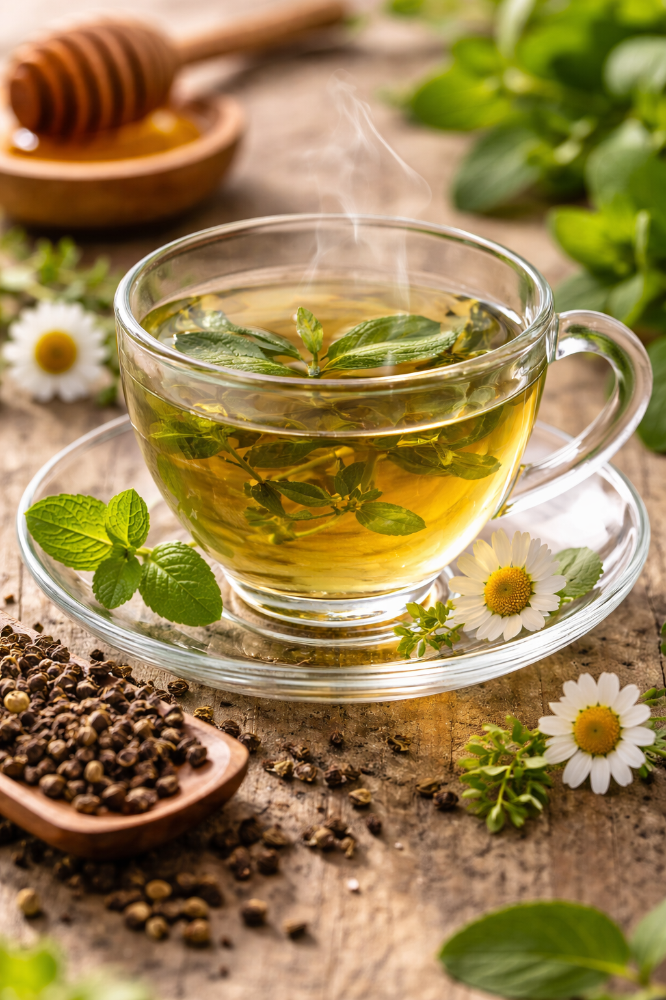
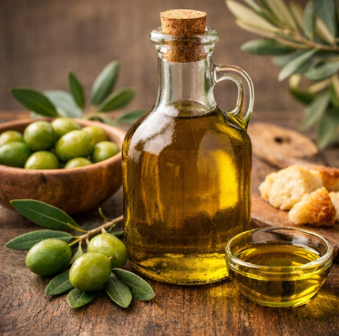
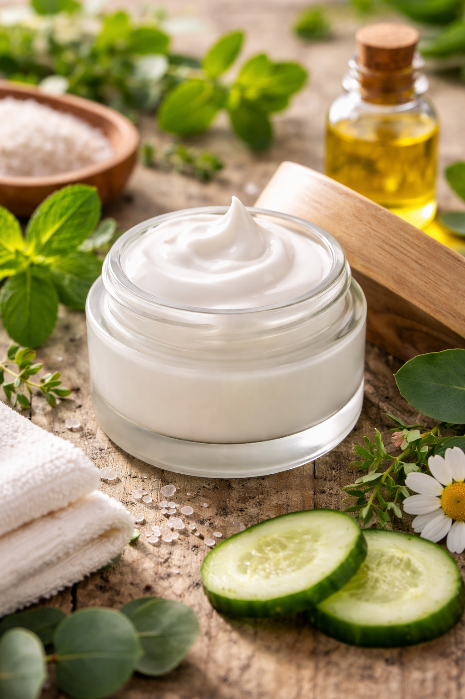

Bienvenid@
Plantas que transforman tu espacio.
Descubre una selección de plantas que no solo embellecen tu hogar, sino que también mejoran tu bienestar. Nuestras plantas ayudan a purificar el aire, reducir el estrés y crear ambientes llenos de vida y armonía.

Viviendo en armonía con la naturaleza
En Naturalis ofrecemos productos naturales y ecológicos que promueven el bienestar y el cuidado del medio ambiente. Desde 2010, trabajamos con pequeños productores locales para garantizar calidad, frescura y procesos responsables. Nuestro compromiso es fomentar hábitos saludables y un consumo consciente, respetando siempre a la naturaleza y a las personas.
-
Productos naturales y ecológicos -
Ofrecemos productos elaborados con ingredientes naturales, libres de químicos dañinos y respetuosos con el medio ambiente. -
Bienestar y salud -
Nuestros productos están pensados para mejorar la calidad de vida y fomentar hábitos saludables. -
Transparencia y calidad -
Garantizamos procesos claros, trazabilidad y altos estándares de calidad en cada producto.
-De la planta a tu bienestar.-
Productos
Descubre una selección de productos elaborados con plantas naturales, pensados para cuidar tu bienestar y el del planeta.
-

Jabón Natural de Lavanda
Jabón artesanal elaborado con extractos naturales de lavanda, ideal para el cuidado diario de la piel.
•Baño diario y momentos de relajación. -

Té Herbal de Manzanilla
Infusión natural elaborada con manzanilla seca de cultivo responsable, favorece la relajación y ayuda a la digestión.
•Consumo nocturno o después de las comidas. -

Aceite Esencial de Eucalipto
Aceite esencial puro obtenido de hojas de eucalipto mediante destilación, aroma refrescante y Ayuda a despejar las vías respiratorias.
•Difusores, masajes (diluido) y aromaterapia. -

Crema Natural de Aloe Vera
Crema hidratante elaborada con aloe vera natural, ideal para el cuidado de la piel, hidrata, regenera y refresca la piel y apta para piel sensible.
•Uso diario después del baño.
-Servicios naturales pensados para tu bienestar.-
Servicios
Ofrecemos servicios pensados para acercarte a los beneficios de las plantas de forma responsable, natural y personalizada.
-
01
Asesoría en productos naturales
Te ayudamos a elegir el producto ideal según tus necesidades de bienestar y estilo de vida.
-
02
Productos personalizados
Creamos combinaciones especiales de productos hechos con plantas, adaptados a tus preferencias.
-
03
Empaques ecológicos
Todos nuestros productos cuentan con empaques reciclables y responsables con el medio ambiente.
-
04
Envíos responsables
Realizamos envíos seguros y eficientes, cuidando la integridad del producto y reduciendo el impacto ambiental.
-
05
Apoyo a productores locales
Trabajamos directamente con pequeños productores para fomentar el comercio justo y sostenible.
-
06
Educación y bienestar natural
Compartimos información y recomendaciones sobre el uso correcto de productos naturales y hábitos saludables.
Conoce más sobre el mundo natural
Un espacio donde compartimos información, consejos y datos curiosos sobre las plantas y los productos naturales, para que aprendas y aproveches mejor sus beneficios en tu vida diaria.
Dejar reseña-
Porque contienen menos químicos artificiales y aprovechan propiedades naturales que cuidan la piel y la salud.
-
Sí, muchas plantas como la lavanda o la manzanilla tienen efectos relajantes que ayudan a disminuir la ansiedad.
-
Significa que fue elaborado con procesos que respetan el medio ambiente y reducen el impacto ambiental.
-
Sí, han sido utilizadas desde la antigüedad por distintas culturas como remedios naturales.
-
Sí, porque fomenta prácticas sostenibles, apoya a productores locales y reduce la contaminación.